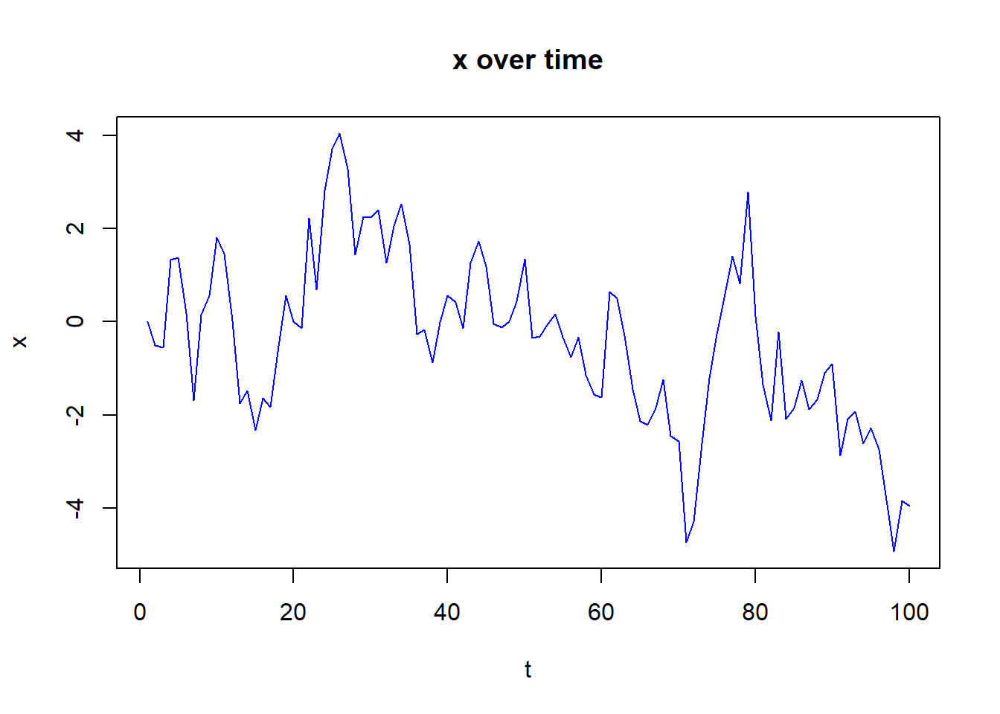

Chapter 12 Sequential Data Embedding
With time series data we cannot shuffle the data due to the temporal nature of the data. This means we cannot shuffle the data. While models like ARIMA do exist they are not strong enough for forcasting. we want to get our data to the point where we can use our machine learning models on it.
first lets make a toy dataset to work with. it will have a y and one X
Since we set rho to be less then 1 our fake data is stationary.
If rho is = 1 then we have non-stationary data and must decompose it to get to this position. You can take the first differance in that case.
# Stationary data rho < 1
n <- 100
rho_y <- 0.80
rho_x <- 0.75 # A different rho for X
y <- numeric(n)
x <- numeric(n)
e_y <- rnorm(n, 0, 1) # White noise for y
e_x <- rnorm(n, 0, 1) # White noise for X
# Generate y and X as separate autoregressive processes
for (j in 1:(n - 1)) {
y[j + 1] <- y[j] * rho_y + e_y[j]
x[j + 1] <- x[j] * rho_x + e_x[j]
}
ylagged <- y[2:n]
xlagged <- x[2:n]
# y over time
plot(y[1:n],
type = "l",
col = "red",
ylab = "y",
xlab = "t",
main = "y over time")
So we begin by predicting y + 1 but we must first prove we can embed and shuffle the data
we will use 2 points back of y and three points back of x to predict the next point of y.
y2 <- 1:10
x2 <- 11:20
# Create the embedded matrix for Y and X
y_emb <- embed(y2, 4)
x_emb <- embed(x2, 4)
colnames(y_emb) <- c("Y(t)", "Y(t-1)", "Y(t-2)", "Y(t-3)")
colnames(x_emb) <- c("X(t)", "X(t-1)", "X(t-2)", "X(t-3)")
fd <- cbind(y_emb, x_emb)
head(fd)## Y(t) Y(t-1) Y(t-2) Y(t-3) X(t) X(t-1) X(t-2) X(t-3)
## [1,] 4 3 2 1 14 13 12 11
## [2,] 5 4 3 2 15 14 13 12
## [3,] 6 5 4 3 16 15 14 13
## [4,] 7 6 5 4 17 16 15 14
## [5,] 8 7 6 5 18 17 16 15
## [6,] 9 8 7 6 19 18 17 16now for each point we are predicting(y + 1), (y+2), and (y+3) we need to edit the data
for predicting point y(t+1) the formula is
\[ \hat{y}(t+1) = f\left( y(t), y(t-1), y(t-2), x(t), x(t-1), x(t-2), x(t-3) \right) \]
and the data is
## Y(t) Y(t-1) Y(t-2) Y(t-3) X(t) X(t-1) X(t-2) X(t-3)
## [1,] 4 3 2 1 14 13 12 11
## [2,] 5 4 3 2 15 14 13 12
## [3,] 6 5 4 3 16 15 14 13
## [4,] 7 6 5 4 17 16 15 14
## [5,] 8 7 6 5 18 17 16 15
## [6,] 9 8 7 6 19 18 17 16in this case row seven is y where t = 10… 10(t) - 3(lags) = 7(rows)
for the seccond point we are predicting y(t+2) the formula is \[ \hat{y}(t+2) = f\left( y(t), y(t-1), y(t-2), x(t), x(t-1), x(t-2), x(t-3) \right) \]
and the data is
# Shift the first column (Y(t)) up by one position
sd <- fd[-nrow(fd), ] # Remove the last row
sd[, 1] <- fd[-1, 1] # Shift the first column up by one
# Display the result to verify
head(sd)## Y(t) Y(t-1) Y(t-2) Y(t-3) X(t) X(t-1) X(t-2) X(t-3)
## [1,] 5 3 2 1 14 13 12 11
## [2,] 6 4 3 2 15 14 13 12
## [3,] 7 5 4 3 16 15 14 13
## [4,] 8 6 5 4 17 16 15 14
## [5,] 9 7 6 5 18 17 16 15
## [6,] 10 8 7 6 19 18 17 16\[ \hat{y}(t+3) = f\left( y(t), y(t-1), y(t-2), x(t), x(t-1), x(t-2), x(t-3) \right) \]
# Shift the first column (Y(t+2)) up by one position to prepare for y(t+3)
td <- sd[-nrow(sd), ] # Remove the last row
td[, 1] <- sd[-1, 1] # Shift the first column up by one
# Display the result to verify
head(td)## Y(t) Y(t-1) Y(t-2) Y(t-3) X(t) X(t-1) X(t-2) X(t-3)
## [1,] 6 3 2 1 14 13 12 11
## [2,] 7 4 3 2 15 14 13 12
## [3,] 8 5 4 3 16 15 14 13
## [4,] 9 6 5 4 17 16 15 14
## [5,] 10 7 6 5 18 17 16 15now we will aplly this to our data and prove that we can shuffle the data
y_emb <- embed(y, 4)
x_emb <- embed(x, 4)
colnames(y_emb) <- c("Y(t)", "Y(t-1)", "Y(t-2)", "Y(t-3)")
colnames(x_emb) <- c("X(t)", "X(t-1)", "X(t-2)", "X(t-3)")They each lose 3 rows at the end of the data set.
now get the data set for predicting y(t+1) same as before
now y(t+2) and y(t+3)
# First, embed the original data for y and x
y_emb <- embed(y, 4)
x_emb <- embed(x, 4)
colnames(y_emb) <- c("Yt", "Y(t-1)", "Y(t-2)", "Y(t-3)")
colnames(x_emb) <- c("X(t)", "X(t-1)", "X(t-2)", "X(t-3)")
fd <- cbind(y_emb, x_emb)
# Shift the first column (Y(t)) up by one position for y(t+2)
sd <- fd[-nrow(fd), ] # Remove the last row
sd[, 1] <- fd[-1, 1] # Shift the first column up by one
# Display the resulting dataset
head(sd)## Yt Y(t-1) Y(t-2) Y(t-3) X(t) X(t-1) X(t-2)
## [1,] 1.929294 0.5787050 1.7820067 0.0000000 0.1548195 1.5972208 0.2145459
## [2,] 4.146824 0.8104935 0.5787050 1.7820067 0.9563507 0.1548195 1.5972208
## [3,] 3.861559 1.9292935 0.8104935 0.5787050 -0.4656051 0.9563507 0.1548195
## [4,] 3.775874 4.1468239 1.9292935 0.8104935 0.2394009 -0.4656051 0.9563507
## [5,] 3.837588 3.8615592 4.1468239 1.9292935 1.4626364 0.2394009 -0.4656051
## [6,] 3.010381 3.7758736 3.8615592 4.1468239 -0.8892229 1.4626364 0.2394009
## X(t-3)
## [1,] 0.0000000
## [2,] 0.2145459
## [3,] 1.5972208
## [4,] 0.1548195
## [5,] 0.9563507
## [6,] -0.4656051# Shift the first column (Y(t+2)) up by one position to prepare for y(t+3)
td <- sd[-nrow(sd), ] # Remove the last row
td[, 1] <- sd[-1, 1] # Shift the first column up by one
# Display the resulting dataset
head(td)## Yt Y(t-1) Y(t-2) Y(t-3) X(t) X(t-1) X(t-2)
## [1,] 4.146824 0.5787050 1.7820067 0.0000000 0.1548195 1.5972208 0.2145459
## [2,] 3.861559 0.8104935 0.5787050 1.7820067 0.9563507 0.1548195 1.5972208
## [3,] 3.775874 1.9292935 0.8104935 0.5787050 -0.4656051 0.9563507 0.1548195
## [4,] 3.837588 4.1468239 1.9292935 0.8104935 0.2394009 -0.4656051 0.9563507
## [5,] 3.010381 3.8615592 4.1468239 1.9292935 1.4626364 0.2394009 -0.4656051
## [6,] 2.971880 3.7758736 3.8615592 4.1468239 -0.8892229 1.4626364 0.2394009
## X(t-3)
## [1,] 0.0000000
## [2,] 0.2145459
## [3,] 1.5972208
## [4,] 0.1548195
## [5,] 0.9563507
## [6,] -0.4656051apply lm to each of the data sets then shuffle and check the coeficients
# Fit a linear model to predict Y(t+1)
fd <- as.data.frame(fd)
sd <- as.data.frame(sd)
td <- as.data.frame(td)
lm1 <- lm(Yt ~ ., data = fd)
lm2 <- lm(Yt ~ ., data = sd)
lm3 <- lm(Yt ~ ., data = td)
summary(lm1)##
## Call:
## lm(formula = Yt ~ ., data = fd)
##
## Residuals:
## Min 1Q Median 3Q Max
## -2.92947 -0.51938 0.00807 0.72227 2.36213
##
## Coefficients:
## Estimate Std. Error t value Pr(>|t|)
## (Intercept) 0.09117 0.10707 0.851 0.397
## `Y(t-1)` 0.85598 0.10690 8.007 4.21e-12 ***
## `Y(t-2)` -0.09809 0.14038 -0.699 0.487
## `Y(t-3)` 0.07958 0.10640 0.748 0.456
## `X(t)` -0.14637 0.11209 -1.306 0.195
## `X(t-1)` 0.19891 0.13247 1.502 0.137
## `X(t-2)` -0.01600 0.13123 -0.122 0.903
## `X(t-3)` 0.04416 0.11058 0.399 0.691
## ---
## Signif. codes: 0 '***' 0.001 '**' 0.01 '*' 0.05 '.' 0.1 ' ' 1
##
## Residual standard error: 0.998 on 89 degrees of freedom
## Multiple R-squared: 0.6996, Adjusted R-squared: 0.676
## F-statistic: 29.62 on 7 and 89 DF, p-value: < 2.2e-16##
## Call:
## lm(formula = Yt ~ ., data = sd)
##
## Residuals:
## Min 1Q Median 3Q Max
## -2.27684 -0.95502 0.01087 0.84341 3.04907
##
## Coefficients:
## Estimate Std. Error t value Pr(>|t|)
## (Intercept) 0.146103 0.138208 1.057 0.2933
## `Y(t-1)` 0.643308 0.138307 4.651 1.15e-05 ***
## `Y(t-2)` -0.133187 0.180526 -0.738 0.4626
## `Y(t-3)` 0.233729 0.137782 1.696 0.0934 .
## `X(t)` -0.006291 0.144171 -0.044 0.9653
## `X(t-1)` 0.195887 0.170375 1.150 0.2534
## `X(t-2)` 0.099337 0.169022 0.588 0.5582
## `X(t-3)` -0.144014 0.142646 -1.010 0.3155
## ---
## Signif. codes: 0 '***' 0.001 '**' 0.01 '*' 0.05 '.' 0.1 ' ' 1
##
## Residual standard error: 1.283 on 88 degrees of freedom
## Multiple R-squared: 0.509, Adjusted R-squared: 0.4699
## F-statistic: 13.03 on 7 and 88 DF, p-value: 2.128e-11##
## Call:
## lm(formula = Yt ~ ., data = td)
##
## Residuals:
## Min 1Q Median 3Q Max
## -2.8378 -0.8876 -0.1540 0.7352 3.6533
##
## Coefficients:
## Estimate Std. Error t value Pr(>|t|)
## (Intercept) 0.17271 0.15236 1.134 0.2601
## `Y(t-1)` 0.38835 0.15293 2.539 0.0129 *
## `Y(t-2)` 0.10300 0.19877 0.518 0.6057
## `Y(t-3)` 0.18286 0.15115 1.210 0.2296
## `X(t)` 0.10152 0.15843 0.641 0.5233
## `X(t-1)` 0.26238 0.18708 1.402 0.1643
## `X(t-2)` -0.02088 0.18596 -0.112 0.9109
## `X(t-3)` -0.23294 0.15649 -1.489 0.1402
## ---
## Signif. codes: 0 '***' 0.001 '**' 0.01 '*' 0.05 '.' 0.1 ' ' 1
##
## Residual standard error: 1.408 on 87 degrees of freedom
## Multiple R-squared: 0.412, Adjusted R-squared: 0.3647
## F-statistic: 8.709 on 7 and 87 DF, p-value: 4.541e-08# Shuffle the data
fd <- fd[sample(nrow(fd)), ]
sd <- sd[sample(nrow(sd)), ]
td <- td[sample(nrow(td)), ]##
## Call:
## lm(formula = Yt ~ ., data = fd)
##
## Residuals:
## Min 1Q Median 3Q Max
## -2.92947 -0.51938 0.00807 0.72227 2.36213
##
## Coefficients:
## Estimate Std. Error t value Pr(>|t|)
## (Intercept) 0.09117 0.10707 0.851 0.397
## `Y(t-1)` 0.85598 0.10690 8.007 4.21e-12 ***
## `Y(t-2)` -0.09809 0.14038 -0.699 0.487
## `Y(t-3)` 0.07958 0.10640 0.748 0.456
## `X(t)` -0.14637 0.11209 -1.306 0.195
## `X(t-1)` 0.19891 0.13247 1.502 0.137
## `X(t-2)` -0.01600 0.13123 -0.122 0.903
## `X(t-3)` 0.04416 0.11058 0.399 0.691
## ---
## Signif. codes: 0 '***' 0.001 '**' 0.01 '*' 0.05 '.' 0.1 ' ' 1
##
## Residual standard error: 0.998 on 89 degrees of freedom
## Multiple R-squared: 0.6996, Adjusted R-squared: 0.676
## F-statistic: 29.62 on 7 and 89 DF, p-value: < 2.2e-16##
## Call:
## lm(formula = Yt ~ ., data = sd)
##
## Residuals:
## Min 1Q Median 3Q Max
## -2.27684 -0.95502 0.01087 0.84341 3.04907
##
## Coefficients:
## Estimate Std. Error t value Pr(>|t|)
## (Intercept) 0.146103 0.138208 1.057 0.2933
## `Y(t-1)` 0.643308 0.138307 4.651 1.15e-05 ***
## `Y(t-2)` -0.133187 0.180526 -0.738 0.4626
## `Y(t-3)` 0.233729 0.137782 1.696 0.0934 .
## `X(t)` -0.006291 0.144171 -0.044 0.9653
## `X(t-1)` 0.195887 0.170375 1.150 0.2534
## `X(t-2)` 0.099337 0.169022 0.588 0.5582
## `X(t-3)` -0.144014 0.142646 -1.010 0.3155
## ---
## Signif. codes: 0 '***' 0.001 '**' 0.01 '*' 0.05 '.' 0.1 ' ' 1
##
## Residual standard error: 1.283 on 88 degrees of freedom
## Multiple R-squared: 0.509, Adjusted R-squared: 0.4699
## F-statistic: 13.03 on 7 and 88 DF, p-value: 2.128e-11##
## Call:
## lm(formula = Yt ~ ., data = td)
##
## Residuals:
## Min 1Q Median 3Q Max
## -2.8378 -0.8876 -0.1540 0.7352 3.6533
##
## Coefficients:
## Estimate Std. Error t value Pr(>|t|)
## (Intercept) 0.17271 0.15236 1.134 0.2601
## `Y(t-1)` 0.38835 0.15293 2.539 0.0129 *
## `Y(t-2)` 0.10300 0.19877 0.518 0.6057
## `Y(t-3)` 0.18286 0.15115 1.210 0.2296
## `X(t)` 0.10152 0.15843 0.641 0.5233
## `X(t-1)` 0.26238 0.18708 1.402 0.1643
## `X(t-2)` -0.02088 0.18596 -0.112 0.9109
## `X(t-3)` -0.23294 0.15649 -1.489 0.1402
## ---
## Signif. codes: 0 '***' 0.001 '**' 0.01 '*' 0.05 '.' 0.1 ' ' 1
##
## Residual standard error: 1.408 on 87 degrees of freedom
## Multiple R-squared: 0.412, Adjusted R-squared: 0.3647
## F-statistic: 8.709 on 7 and 87 DF, p-value: 4.541e-08Now at this point we can use any machine learning model we want to predict the next three points in the time series.